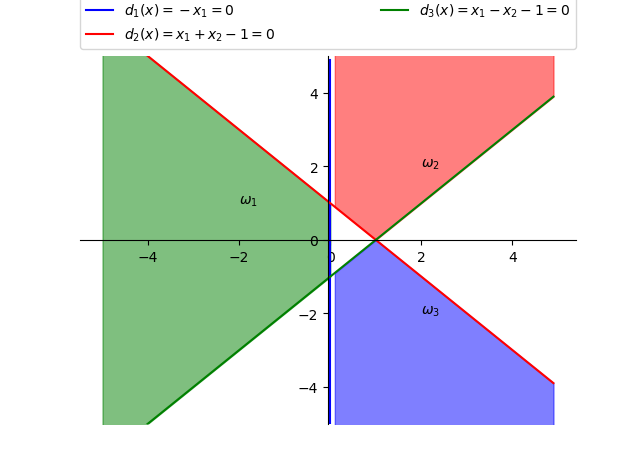
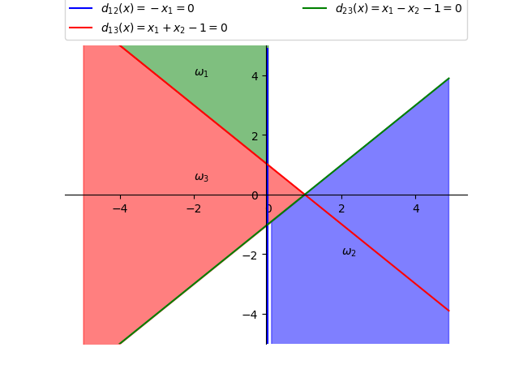
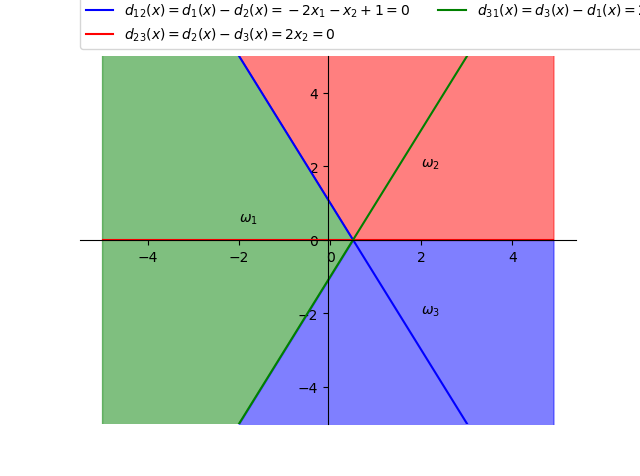

PRML Chapter 3 homework*
(1) 在一个10类的模式识别问题中，有3类单独满足多类情况1，其余的类别满足多类情况2。问该模式识别问题所需判别函数的最少数目是多少？*
3 类满足多类情况 1，剩下的 7 类看作 1 类，在多类情况 1 下需要 4 个判别函数。
7 类在多类情况 2 下需要 7\cdot(7-1)/2 = 21 个判别函数。
即共需 25 个判别函数。
(2) 一个三类问题，其判别函数如下：*
1. 设这些函数是在多类情况1条件下确定的，绘出其判别界面和每一个模式类别的区域。*

2. 设为多类情况2，并使：d_{12}(x)= d_1(x), d_{13}(x)= d_2(x), d_{23}(x)= d_3(x)。绘出其判别界面和多类情况2的区域。*

3. 设 d_1(x), d_2(x) 和 d_3(x) 是在多类情况3的条件下确定的，绘出其判别界面和每类的区域。*

(3) 两类模式，每类包括5个3维不同的模式，且良好分布。如果它们是线性可分的，问权向量至少需要几个系数分量？假如要建立二次的多项式判别函数，又至少需要几个系数分量？（设模式的良好分布不因模式变化而改变。）*
对于 n 维向量 \mathbf{x}，若用 r 次多项式，d(\mathbf{x}) 的权系数总项为： $$ N_w = C_{n+r}^r = \frac{(n+r)!}{r!n!} $$
线性可分，则至少需要 4 个系数分量。
建立二次的多项式判别函数，则至少需要 N_w = C_5^2 = 10 个系数分量。
(4) 用感知器算法求下列模式分类的解向量 \mathbf{w}*
感知器算法通过迭代产生线性可分的判别函数，过程太麻烦，直接上代码：
1 2 3 4 5 6 7 8 9 10 11 12 13 14 15 16 17 18 19 20 21 22 23 24 25 26 27 28 29 30 31 32 33 34 35 36 37 38 39 40 41 42 43 44 45 46 47 48 49 50 | import numpy as np import math w1 = np.array([ [0, 1, 1, 1], [0, 0, 0, 1], [0, 0, 1, 0], ], dtype=np.float) w2 = np.array([ [0, 0, 0, 1], [0, 1, 1, 1], [1, 1, 0, 1], ], dtype=np.float) # 初始化 预处理 C = 1 m, n = w1.shape w = np.zeros(m + 1) add_row = np.ones(w1.shape[1]) w1 = np.row_stack((w1, add_row)) w2 = np.row_stack((w2, add_row)) w2 = -1 * w2 w1 = np.matrix(w1) w2 = np.matrix(w2) w = np.matrix(w) cnt = 0 while True: changed = False # w1 if w·x for i in range(0, n): cur_col = w1[:, i] if (w * cur_col)[0, 0] <= 0: changed = True w += (C * cur_col).T print(w) for i in range(0, n): cur_col = w2[:, i] if (w * cur_col)[0, 0] <= 0: changed = True w += (C * cur_col).T print(w) cnt += 1 if not changed: break print(cnt, w) |
1 2 3 4 5 6 7 8 9 10 11 12 13 14 | In [45]: %run perception.py
Initial: [0. 0. 0. 0.]
[[0. 0. 0. 1.]]
[[ 0. 0. -1. 0.]]
[[ 0. -1. -1. -1.]]
[[ 0. -1. -1. 0.]]
[[ 1. -1. -1. 1.]]
[[ 1. -1. -2. 0.]]
[[ 1. -1. -2. 1.]]
[[ 2. -1. -1. 2.]]
[[ 2. -1. -2. 1.]]
[[ 2. -2. -2. 0.]]
[[ 2. -2. -2. 1.]]
5 times [[ 2. -2. -2. 1.]]
|
经过 5 次迭代，得到最终的权向量为 \mathbf{w} = (2\ -2\ -2\ 1) 即判别函数为 $$ d(\mathbf{x}) = 2x_1 - 2x_2 - 2x_3 + 1 $$
(5) 用多类感知器算法求下列模式的判别函数*
还是感知器算法，把上面的代码改成多类的即可：
1 2 3 4 5 6 7 8 9 10 11 12 13 14 15 16 17 18 19 20 21 22 23 24 25 26 27 28 29 30 31 32 33 34 35 36 37 38 39 40 41 42 43 44 45 46 47 48 49 50 51 52 53 54 55 56 57 58 59 | import numpy as np import math w1 = np.array([ [-1], [-1], ], dtype=float) w2 = np.array([ [0], [0], ], dtype=float) w3 = np.array([ [1], [1], ], dtype=float) # 初始化 预处理 C = 1 m, n = w1.shape w = np.zeros((m + 1, 3)) print("Initial:\n", w) add_row = np.ones(n) w1 = np.row_stack((w1, add_row)) w2 = np.row_stack((w2, add_row)) w3 = np.row_stack((w3, add_row)) # w2 = -1 * w2 w1 = np.matrix(w1) w2 = np.matrix(w2) w3 = np.matrix(w3) w = np.matrix(w) def interate(idx, wn): changed = False d = w[idx] * wn for i in range(0, w.shape[0]): cur_w = w[i] if d <= cur_w * wn and i != idx: changed = True w[i] -= C * wn.T if changed: w[idx] += C * wn.T return changed cnt = 0 while True: changed = False changed |= interate(0, w1) changed |= interate(1, w2) changed |= interate(2, w3) cnt += 1 if not changed: break print(cnt, "times\n ", w) |
需要注意的是每次要先算出所有判别函数的值然后再比较和修正。
1 2 3 4 5 6 7 8 9 | In [54]: %run perception_multiclass.py Initial: [[0. 0. 0.] [0. 0. 0.] [0. 0. 0.]] 3 times [[-1. -1. -1.] [ 0. 0. 0.] [ 2. 2. -2.]] |
最后得到的判别函数为： $$ d_1(x) = -x_1 - x_2 - 1 \ d_2(x) = 0 \ d_3(x) = 2x_1 + 2x_2 - 2 $$
(6) 采用梯度法和如下的准则函数，式中实数 b > 0，试导出两类模式的分类算法。*
梯度法改变了感知器算法中的修正方式，错误分类时有： $$ \rm {w(k+1)} = {w(k)} - C\left{\frac{\partial{J(w, x)}}{\partial{w}}\right}_{{w = w(k)}} = {w(k) - C\cdot\nabla J} $$ 计算 \mathrm{J} 对 \mathbf{w} 的偏微分： $$ \rm \frac{\partial J}{\partial w}=\frac{1}{4|x|{2}}\left[\left(w{T} x-b\right)-\left|w^{T} x-b\right|\right]\cdot\left[x-x\cdot \operatorname{sign}\left(w^{T} x-b\right)\right] \ \rm \operatorname{sign}(w^Tx - b) = \left{ \begin{aligned} \rm +1, w^T-b > 0\ \rm -1, w^T-b \leq 0 \end{aligned} \right} $$ 得到迭代式： $$ \begin{aligned} \rm w(k+1) &= \rm w(k) - \frac{C}{4|x|{2}}\left[\left(w(k){T} x-b\right)-\left|w(k)^{T} x-b\right|\right]\cdot\left[x-x\cdot \operatorname{sign}\left(w(k)^{T} x-b\right)\right] \ &= \rm w(k) + C\cdot \left{ \begin{aligned}[r] \rm 0\quad if\quad w(k)^Tx -b > 0\ \rm \frac{(b-w(k)Tx)}{|x|2}x\quad if \quad w(k)^Tx - b \leq 0 \end{aligned} \right} \end{aligned} $$
(7) 用二次埃尔米特多项式的势函数算法求解以下模式的分类问题*
用二次 Hermite 多项式，正交函数集用 H_0(x), H_1(x), H_2(x) 组成： $$ \rm H_0(x) = 1, H_1(x) = 2x, H_2(x) = 4x^2 - 2 \ \varphi_{1}(x)=\varphi_{1}\left(x_{1}, x_{2}\right)=H_{0}\left(x_{1}\right) H_{0}\left(x_{2}\right)=1 \ \varphi_{2}(x)=\varphi_{2}\left(x_{1}, x_{2}\right)=H_{0}\left(x_{1}\right) H_{1}\left(x_{2}\right)=2 x_{2} \ \varphi_{3}(x)=\varphi_{3}\left(x_{1}, x_{2}\right)=H_{0}\left(x_{1}\right) H_{2}\left(x_{2}\right)=4 x_{2}^{2}-2 \ \varphi_{4}(x)=\varphi_{4}\left(x_{1}, x_{2}\right)=H_{1}\left(x_{1}\right) H_{0}\left(x_{2}\right)=2 x_{1} \ \varphi_{5}(x)=\varphi_{5}\left(x_{1}, x_{2}\right)=H_{1}\left(x_{1}\right) H_{1}\left(x_{2}\right)=4 x_{1} x_{2} \ \varphi_{6}(x)=\varphi_{6}\left(x_{1}, x_{2}\right)=H_{1}\left(x_{1}\right) H_{2}\left(x_{2}\right)=2 x_{1}\left(4 x_{2}^{2}-2\right) \ \varphi_{7}(x)=\varphi_{7}\left(x_{1}, x_{2}\right)=H_{2}\left(x_{1}\right) H_{0}\left(x_{2}\right)=4 x_{1}^{2}-2 \ \varphi_{8}(x)=\varphi_{8}\left(x_{1}, x_{2}\right)=H_{2}\left(x_{1}\right) H_{1}\left(x_{2}\right)=2 x_{2}\left(4 x_{1}^{2}-2\right) \ \varphi_{9}(x)=\varphi_{9}\left(x_{1}, x_{2}\right)=H_{2}\left(x_{1}\right) H_{2}\left(x_{2}\right)=\left(4 x_{1}^{2}-2\right)\left(4 x_{2}^{2}-2\right) $$ 按第一类势函数定义，得到： $$ \rm K(x, x_k) = \sum_{i=1}^{9}\varphi_i(x)\varphi_i(x_k), x=(x_1, x_2)^T, x_k = (x_{k_1}, x_{k_2})^T $$ 通过训练样本逐步计算累计位势：
-
取 x_1 = (0\ 1)^T \in \omega_1 $$ \begin{aligned} \mathrm{K}{1}(\mathrm{x})& =\mathrm{K}\left(\mathrm{x}, \mathrm{x}{1}\right) \& =-15+20 \mathrm{x}{2}+40 \mathrm{x}{2}^{2}+24 \mathrm{x}{1}^{2}-32 \mathrm{x}{1}^{2} \mathrm{x}{2}-64 \mathrm{x}{1}^{2} \mathrm{x}_{2}^{2} \end{aligned} $$
-
取 x_2 = (0\ -1)^T \in \omega_1，\mathrm{K}_{1}\left(\mathrm{x}_{2}\right)=5>0，则 \rm K_2(x) = K_1(x)
-
取 x_3 = (1\ 0)^T \in \omega_2，\rm K_2(x_3) =9>0，则： $$ \begin{aligned} \mathrm{K}{3}(\mathrm{x}) &=\mathrm{K}{2}(\mathrm{x})-\mathrm{K}\left(\mathrm{x}, \mathrm{x}{3}\right) \ & =-15+20 \mathrm{x}{2}+40 \mathrm{x}{2}^{2}+24 \mathrm{x}{1}^{2}-32 \mathrm{x}{1}^{2} \mathrm{x}{2}-64 \mathrm{x}{1}^{2} \mathrm{x}{2}^{2} \ &\quad -\left[-15+20 \mathrm{x}{1}+24 \mathrm{x}{2}^{2}+40 \mathrm{x}{1}^{2}-32 \mathrm{x}{1} \mathrm{x}{2}^{2}-64 \mathrm{x}{1}^{2} \mathrm{x}{2}^{2}\right] \ & =20 \mathrm{x}{2}-20 \mathrm{x}{1}+16 \mathrm{x}{2}^{2}-16 \mathrm{x}{1}^{2}-32 \mathrm{x}{1}^{2} \mathrm{x}{2}+32 \mathrm{x}{1} \mathrm{x}_{2}^{2} \end{aligned} $$
-
取 x_4 = (-1\ 0)^T \in \omega_2，K_3(x_4) = 4>0，则： $$ \begin{aligned} \mathrm{K}{4}(\mathrm{x})&=\mathrm{K}{3}(\mathrm{x})-\mathrm{K}\left(\mathrm{x}, \mathrm{x}{4}\right) \ &=20 \mathrm{x}{2}-20 \mathrm{x}{1}+16 \mathrm{x}{2}^{2}-16 \mathrm{x}{1}^{2}-32 \mathrm{x}{1}^{2} \mathrm{x}{2}+32 \mathrm{x}{1} \mathrm{x}{2}^{2} \ &\quad -\left[-15-20 \mathrm{x}{1}+24 \mathrm{x}{2}^{2}+40 \mathrm{x}{1}^{2}+32 \mathrm{x}{1} \mathrm{x}{2}^{2}-64 \mathrm{x}{1}^{2} \mathrm{x}{2}^{2}\right] \ &=15+20 \mathrm{x}{2}-8 \mathrm{x}{2}^{2}-56 \mathrm{x}{1}^{2}-32 \mathrm{x}{1}^{2} \mathrm{x}{2}+64 \mathrm{x}{1}^{2} \mathrm{x}_{2}^{2} \end{aligned} $$ 第一轮迭代完成，然后第二轮
-
取 x_5 = (0\ 1)^T \in \omega_1，\rm K_4(x_5) = 27 > 0，则 K_5(x) = K_4(x)
-
取 x_6 = (0\ -1)^T \in \omega_1，\rm K_5(x_6) = -13 < 0，则： $$ \begin{aligned} \mathrm{K}{6}(\mathrm{x})&=\mathrm{K}{5}(\mathrm{x})-\mathrm{K}\left(\mathrm{x}, \mathrm{x}{6}\right) \ &=15+20 \mathrm{x}{2}-8 \mathrm{x}{2}^{2}-56 \mathrm{x}{1}^{2}-32 \mathrm{x}{1}^{2} \mathrm{x}{2}+64 \mathrm{x}{1}^{2} \mathrm{x}{2}^{2} \ &\quad +\left[-15-20 \mathrm{x}{2}+40 \mathrm{x}{2}^{2}+24 \mathrm{x}{1}^{2}+32 \mathrm{x}{1}^{2} \mathrm{x}{2}-64 \mathrm{x}{1}^{2} \mathrm{x}{2}^{2}\right] \ &=32 \mathrm{x}{2}^{2}-32 \mathrm{x}_{1}^{2} \end{aligned} $$
-
取 x_7 = (1\ 0)^T \in \omega_2， \rm K_6(x_7) = -32 < 0，则 \rm K_7(x) = K_6(x)
-
取 x_8 = (-1\ 0)^T \in \omega_2， \rm K_7(x_8) = -32 < 0，则 \rm K_8(x) = K_7(x)
- 取 x_9 = (0\ 1)^T \in \omega_1， \rm K_8(x_9) = 32 > 0，则 \rm K_{9}(x) = K_8(x)
- 取 x_{10} = (0\ -1)^T \in \omega_1， \rm K_9(x_{10}) = 32 > 0，则 \rm K_{10}(x) = K_9(x)
到此全部分类正确，即得到了判别函数： $$ \rm d(x) = K_{10}(x) = 32x_2^2 - 32x_1^2 $$
(8) 用下列势函数求解以下模式的分类问题*
取 \alpha = 1，在二维情况下势函数为： $$ \rm K\left(x, x_{k}\right)=e{-\left|x-x_{k}\right|{2}}=e{-\left[\left(x_{1}-x_{h}\right){2}+\left(x_{2}-x_{k_{2}}\right)^{2}\right]} $$
-
取 x_1 = (0\ 1)^T \in \omega_1，则 \rm K_1(x) = K(x, x_1) = e^{-[x_1^2+(x_2-1)^2]}
-
取 x_2 = (0\ -1)^T \in w_1， \rm K_1(x_2) = e^{-4} >0，则 \rm K_2(x) = K_1(x)
-
取 x_3 = (1\ 0)^T \in \omega_2，\rm K_2(x_3) = e^{-2} > 0，则： $$ \begin{aligned} \rm K_3(x) &= \rm K_2(x) - K(x, x_3) \ &= \rm e{-[x_12+(x_2-1)^2]} - e{-[(x_1-1)2+x_2^2]} \end{aligned} $$
-
取 x_4 = (-1\ 0)^T \in \omega_2，\rm K_3(x_4) = e^{-2} - e^{-4} >0，则： $$ \begin{aligned} \rm K_4(x) &= \rm K_3(x) - K(x, x_4) \ &= \rm e{-[x_12+(x_2-1)2]}-e{-[(x_1-1)2+x_22]}-e{-[(x_1+1)2+x_2^2]} \end{aligned} $$
-
取 x_5 = (0\ 1)^T \in \omega_1，\rm K_4(x_5) = 1 - e^{-2} - e^{-2} > 0，则 \rm K_5(x) = K_4(x)
-
取 x_6 = (0\ -1)^T \in \omega_1，\rm K_5(x_6) = e^{-4}-e^{-2}-e^{-2} < 0，则： $$ \begin{aligned} \rm K_6(x) &=\rm K_5(x) + K(x, x_6) \ &=\rm e{-[x_12+(x_2-1)2]}-e{-[(x_1-1)2+x_22]}-e{-[(x_1+1)2+x_22]}+e{-[x_12+(x_2+1)2]} \end{aligned} $$
-
取 x_7 = (1\ 0)^T \in \omega_2，\rm K_6(x_7) = e^{-2} - 1 - e^{-4} + e^{-2} < 0，则 \rm K_7(x) = K_6(x)
-
取 x_8 = (-1\ 0)^T \in \omega_2，\rm K_7(x_8) = e^{-2} - e^{-4} - 1 + e^{-2} < 0，则 \rm K_8(x) = K_7(x)
-
取 x_9 = (0\ 1)^T \in \omega_1，\rm K_8(x_9) =1 - e^{-2} - e^{-2} + e^4 > 0，则 \rm K_9(x) = K_8(x)
-
取 x_{10} = (0\ -1)^T \in \omega_1，\rm K_9(x_{10}) = e^{-4} - e^{-2} - e^{-2} + 1 > 0，则 \rm K_{10}(x) = K_9(x)
全部分类正确，即得到了判别函数： $$ \rm d(x) = e{-[x_12+(x_2-1)2]}-e{-[(x_1-1)2+x_22]}-e{-[(x_1+1)2+x_22]}+e{-[x_12+(x_2+1)2]} $$